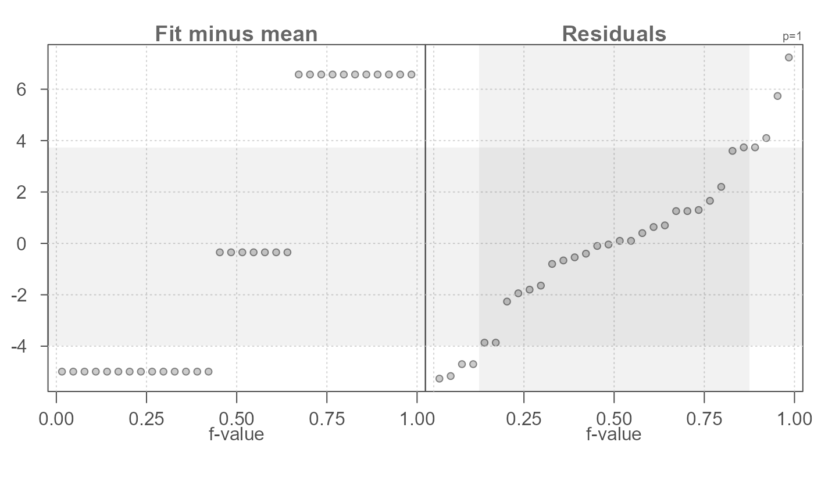
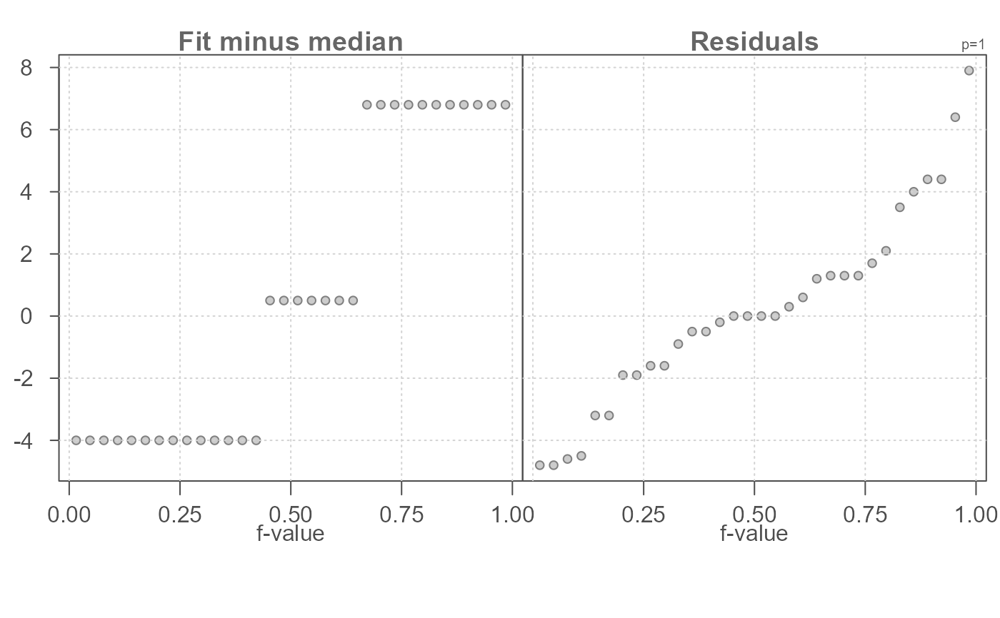
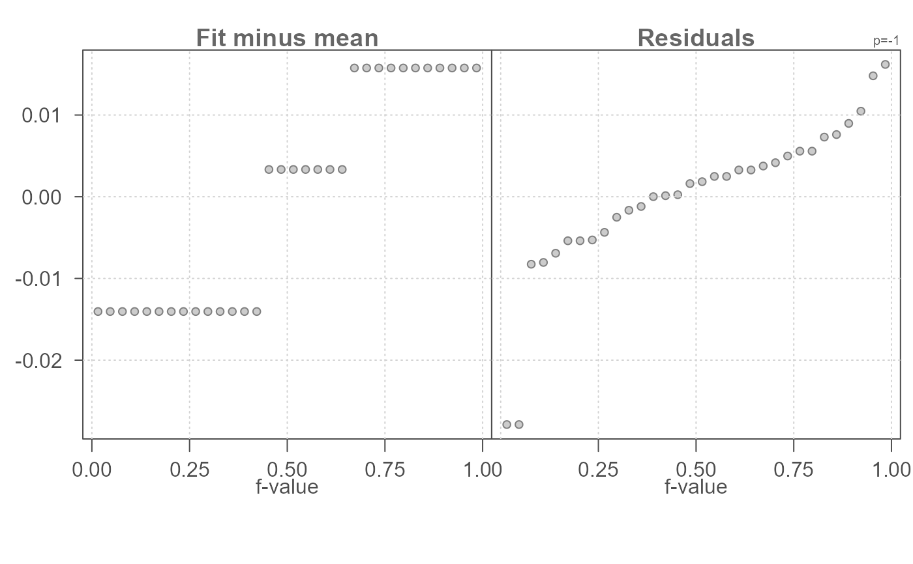
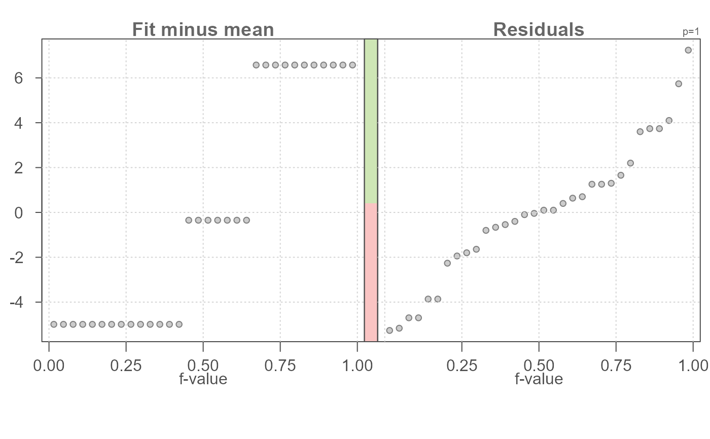
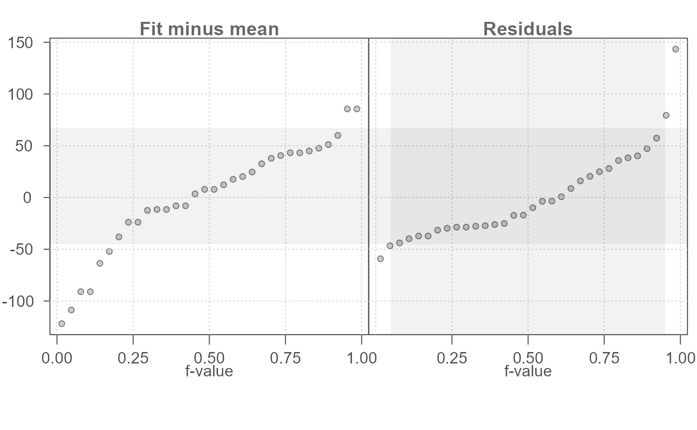
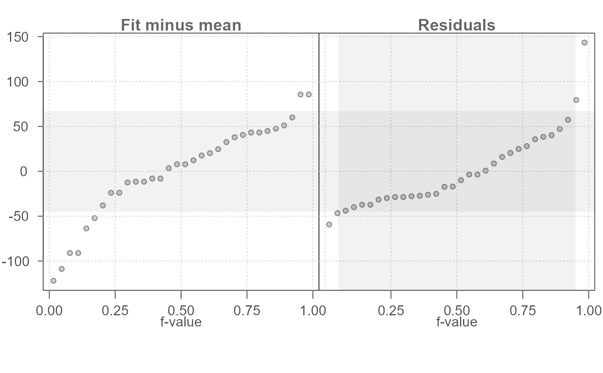

eda_rfs generates a Cleveland residual-fit spread plot
for univariate or bivariate data.
Usage
eda_rfs(
dat,
x = NULL,
grp = NULL,
p = 1L,
tukey = FALSE,
show.par = TRUE,
stat = mean,
grey = 0.7,
pch = 21,
p.col = "grey50",
p.fill = "grey80",
inner = 0.9,
q = FALSE,
size = 0.8,
alpha = 0.7,
ylim = NULL,
bar = FALSE
)Arguments
- dat
An eda_lm model, an lm model or a dataframe of univariate data.
- x
Column of values if
datis a dataframe, ignored otherwise.- grp
Column of grouping variables if
datis a dataframe, ignored otherwise.- p
Power transformation to apply to univariate data. Ignored if linear model is passed to function.
- tukey
Boolean determining if a Tukey transformation should be adopted (
TRUE) or if a Box-Cox transformation should be adopted (FALSE).- show.par
Boolean determining if the power transformation used with the data should be displayed in the plot's upper-right corner.
- stat
Choice of summary statistic to use when centering the fitted values around 0. The
statparameter is also used for fitting univariate values (i.e. for summarizing groups).statcan be eithermeanormedian.- grey
Grey level to apply to plot elements (0 to 1 with 1 = black).
- pch
Point symbol type.
- p.col
Color for point symbol.
- p.fill
Point fill color passed to
bg(Only used forpchranging from 21-25).- inner
Fraction of values that should be captured by the inner color band of the normal and density plots. Defaults to 0.9 (inner 90% of values).
- q
Boolean determining if grey quantile boxes should be plotted.
- size
Point size (0-1)
- alpha
Point transparency (0 = transparent, 1 = opaque). Only applicable if
rgb()is not used to define point colors.- ylim
Define custom y axis limits.
- bar
Boolean determining if spread comparison stacked bar should be plotted.
Details
The eda_rfs function generates a residual-fit spread plot for
univariate and bivariate data. Input can be a dataframe with one column
storing the continuous variable and another column storing the categorical
(grouping) variable or, for a bivariate dataset, a model output from an
lm(), eda_lm() or eda_rline() function.
The stat argument only applies to univariate data and allows the user
to choose the summary statistic to fit to the data (either mean or median).
This statistic is also used to recenter the fitted values in the rfs plot.
The q argument, when set to TRUE, will add a shaded region to
the residual quantile plot highlighting the mid portion of the data defined
by the inner argument (set to 90
range defined by the mid portion of the data is highlighted in the left plot
for comparison with the the full range defined by the fitted values.
The inner argument is the fraction of mid values to display with the
shaded region if q = TRUE and the fraction used to define the
residual's spread in the console output.
The bar option, when set to TRUE, adds a narrow stacked barplot
that compares the spread covered by the residuals (red bar) with the spread
covered by the fitted values (green bar). The residual spread is computed
for the portion of the residuals defined by the inner argument. The
values outputted in the console are those used in computing the vertical
bars.
A stacked bar plot (bar = TRUE) can be added to the plot to highlight
the relative spreads between fitted values and residuals. Note that the
residual spread is defined by the inner argument. The red bar is
the relative spread of the residuals and the green bar is the relative
spread of the fitted values. The stacked bar plot can be helpful in quickly
gauging the effect the fitted values have in explaining the variability in
the data. The longer the green bar relative to the red bar, the greater the
grouping variable's (for univariate data) or linear model's (for bivariate
data) effect in minimizing the uncertainty in the estimated value.
Examples
# Generate a basic residual-fit spread plot
eda_rfs(mtcars,mpg, cyl)
#> The mid 90.0% of residuals covers about 9.74 units.
#> The fitted values cover a range of 11.56 units, or about 118.7% of the mid 90.0% of residuals.
# Add inner 90% region to residuals (grey boxes in plot)
# Vertical grey box shows matching y-values
eda_rfs(mtcars,mpg, cyl, q = TRUE)
#> The mid 90.0% of residuals covers about 9.74 units.
#> The fitted values cover a range of 11.56 units, or about 118.7% of the mid 90.0% of residuals.
# Change guide to encompass mid 75% of residual values
eda_rfs(mtcars,mpg, cyl, q = TRUE, inner = 0.75)
#> The mid 75.0% of residuals covers about 7.70 units.
#> The fitted values cover a range of 11.56 units, or about 150.1% of the mid 75.0% of residuals.

# Use median instead of the mean to compute group summaries and to
# recenter the fitted values around 0.
eda_rfs(mtcars,mpg, cyl, stat = median)
#> The mid 90.0% of residuals covers about 9.99 units.
#> The fitted values cover a range of 10.80 units, or about 108.1% of the mid 90.0% of residuals.

# Apply power transformation of -1 to mpg. Defaults to box-cox method.
eda_rfs(mtcars,mpg, cyl, p = -1)
#> The mid 90.0% of residuals covers about 0.03 units.
#> The fitted values cover a range of 0.03 units, or about 101.0% of the mid 90.0% of residuals.

# Display a stacked bar plot showing relative importance in spreads
# between fitted values and residuals.
eda_rfs(mtcars,mpg, cyl, bar = TRUE)
#> The mid 90.0% of residuals covers about 9.74 units.
#> The fitted values cover a range of 11.56 units, or about 118.7% of the mid 90.0% of residuals.

# Generate rfs plot for bivariate model output. Model can be generated from
# lm(), eda_lm() or eda_rline()
M1 <- lm(hp ~ mpg, mtcars)
eda_rfs(M1,q =TRUE)
#> The mid 90.0% of residuals covers about 112.42 units.
#> The fitted values cover a range of 207.50 units, or about 184.6% of the mid 90.0% of residuals.
 M2 <- eda_lm(mtcars, mpg, hp)
M2 <- eda_lm(mtcars, mpg, hp)
 #> int mpg^1
#> 324.082314 -8.829731
eda_rfs(M2,q =TRUE)
#> The mid 90.0% of residuals covers about 112.42 units.
#> The fitted values cover a range of 207.50 units, or about 184.6% of the mid 90.0% of residuals.

M3 <- eda_rline(mtcars, mpg, hp)
eda_rfs(M3, q =TRUE)
#> The mid 90.0% of residuals covers about 122.52 units.
#> The fitted values cover a range of 252.28 units, or about 205.9% of the mid 90.0% of residuals.
#> int mpg^1
#> 324.082314 -8.829731
eda_rfs(M2,q =TRUE)
#> The mid 90.0% of residuals covers about 112.42 units.
#> The fitted values cover a range of 207.50 units, or about 184.6% of the mid 90.0% of residuals.

M3 <- eda_rline(mtcars, mpg, hp)
eda_rfs(M3, q =TRUE)
#> The mid 90.0% of residuals covers about 122.52 units.
#> The fitted values cover a range of 252.28 units, or about 205.9% of the mid 90.0% of residuals.